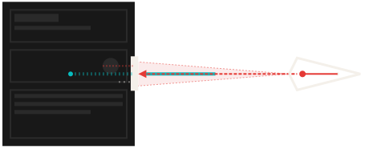
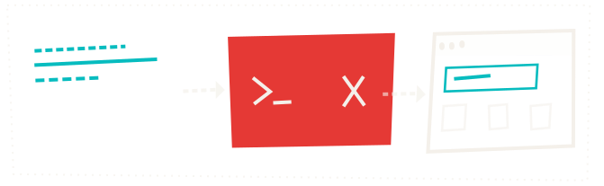
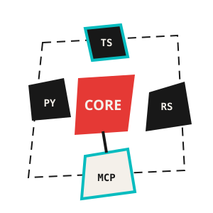

Software was built for fingers and eyes. Agents don't have either. AFD flips the model: define commands first, validate in the terminal, paint the UI last. The command layer is the product. Everything else is a surface.
Your app is a black box to AI.
Traditional apps work fine for humans. Click a button, fill a form, read a screen. But an LLM staring at your codebase is a brilliant engineer locked behind a keyhole. It can read your source. It can't use your product.

Capabilities hide behind visual interfaces. State lives in components. Features only fire through mouse events. The API you bolt on later copies the UI. Badly. Two systems, one always out of sync.
Define the command. Validate it in the terminal. Only then do you build the button. If it fails in the CLI, the architecture is wrong.

Most tools hand agents raw data and wish them luck. AFD gives agents the same trust signals that make human UX work: confidence scores, transparent reasoning, recovery paths when things break, and a plan for what to do next.
The agent doesn't have to guess whether a match is reliable. It doesn't have to invent a fallback when a lookup fails. The system already knows.
{
"success": true,
"data": { "id": 42, "role": "admin" },
"confidence": 0.85,
"reasoning": "Matched by email.",
"warnings": [{
"message": "Elevated privileges."
}],
"suggestions": [
"Review role assignments"
]
}When things break, agents shouldn't have to guess.
{
"status": 404,
"message": "Not found"
}THE BLANK WALL
{
"success": false,
"error": {
"code": "NOT_FOUND",
"message": "No user with email 'jdoe@example.com'",
"suggestion": "Try user-search with partial match"
}
}THE RECOVERY PATH
A 404 and a blank wall versus a diagnosis and a next step. The agent doesn't stall or churn. It recovers.
Write the command. Typed schema. Explicit inputs. Structured error states. The schema is the contract between your code and every agent that will ever call it.
Run it in the terminal. Hit every edge case. Confirm error recovery paths. If the command breaks here, you just saved yourself from shipping a broken button.
Now build the UI. It's a thin wrapper over proven logic. Agents plug into the same commands your React components call. Zero translation layer. Full parity.
Paradigms change. Commands don't. CLI gave way to GUI. Conversational AI is replacing both. The command layer stays.
The abstraction isn't theoretical. It changes how fast you ship.
You define a command. Validate it in the terminal. The agent iterates on logic in seconds — no browser, no clicking, no waiting for renders. Once the command passes, the agent builds UI against it.
Then the feedback comes in. The layout is wrong. The flow needs rethinking. Rip the UI out. Rebuild it. Rewire it to the same commands that have been passing tests the entire time. When logic lives in the UI, agents shift a component and corrupt a data flow. Fix one thing, break three. Separate them, and the UI becomes disposable — rebuildable in minutes while the logic stays proven.
Jobs-to-Be-Done scenario testing. Built in.
Test suites check buttons and endpoints. AFD tests the job the user hired your software to do.
Write a YAML scenario that describes a user journey — create a todo, complete it, delete it. Each step calls a command, asserts the result, and passes data forward. No browser. No Selenium. No flaky CSS selectors. Just the job, validated end to end through the command layer.
JTBD scenarios test the jobs. Surface validation audits the command surface itself — naming collisions, schema drift, prompt injection. Together, they replace fragile E2E suites.
scenario:
name: "Create and complete a todo"
tags: ["smoke", "crud"]
steps:
- name: "Create a new todo"
command: todo-create
input:
title: "Buy groceries"
priority: "high"
expect:
success: true
data:
title: "Buy groceries"
completed: false
- name: "Complete the todo"
command: todo-toggle
input:
id: "${{ steps[0].data.id }}"
expect:
success: true
data:
completed: trueTypeScript · Python · Rust
AFD ships as packages you install, not a platform you migrate to. Pick a language. Add the package. Define your first command.
npm install @lushly-dev/afd-core @lushly-dev/afd-server
pip install afd
cargo add afd
CommandResult, CommandError, batching, streaming.
Zod-based MCP server factory with middleware.
MCP client + DirectClient for ~0.03ms in-process calls.
Connect, call, validate, explore commands.
Provider-agnostic auth — middleware, session sync.
JTBD scenario runner, surface validation.
Frontend adapters for rendering CommandResult.
Pydantic CommandResult, FastMCP server.
CommandResult types, CommandRegistry, WASM.
The agentic development layer built on AFD.
Shared bot infrastructure — 52 bundled skills for linting, testing, releasing, code review, and browser automation. All built on AFD's command-first patterns. It's how AFD powers its own development with Alfred.
Explore Botcore →